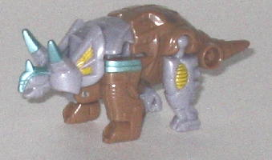
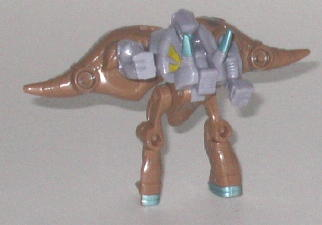
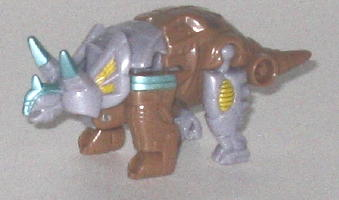
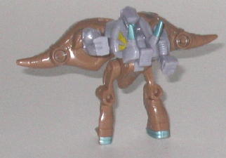
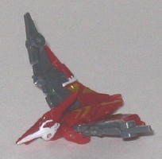
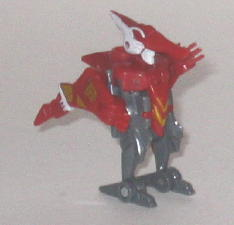
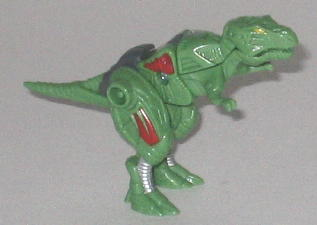
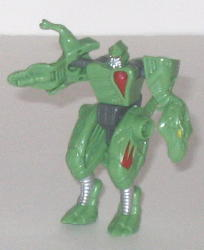

 
Difficulty of Transformation : Easy
Color Scheme : Light brown, dull fleshy lavender, and some metallic silvery blue, dark red, and dull goldish yellow
Individual Rating : 4.9
Allegiance
: Autobot
Size
: Mini-Con (3-pack)
Overall Rating
: 5.5
 Knockdown
Knockdown


Difficulty of Transformation
: Easy
Color Scheme
: Light brown, dull
fleshy lavender, and some metallic silvery blue, dark red, and dull goldish
yellow
Individual Rating
: 4.9
Knockdown's alternate
mode is a technorganic triceratops. This mode is generally pretty good,
with spot-on perfect proportions and excellent mold detailing-- things
like mechanical bits and technorganic "muscles" are all over the tiny figure.
The paint detailing could use just a few more paint apps here and there
(especially on the beast mode eyes-- they're VERY hard to see without paint),
but it's adequate. The overall color scheme is fitting for a triceratops,
but it's a tad boring-- perhaps making the brown darker would have helped
the two main colors to contrast a little more-- same goes for the yellow,
it just doesn't provide much contrast. The metallic silvery blue looks
great against the main colors, however. The only real big problem I have
with this mode is that Knockdown really can't move whatsoever-- he's completely
stuck in one position. His rear legs can pivot outwards, but what use is
that movement? Bleh. Knockdown has two Minicon ports, one on each side
of the base of his tail.
In what is sadly a recurring
theme among the Classics Minicons, Knockdown has a pretty darned goofy-looking
robot mode. First off, his legs are rather skinny, and they look backwards--
there's actually toe-like details on the BACK of the feet! Secondly, LEGS
ARE NOT ARMS. Seriously the triceratops rear feet are just supposed to
suddenly look like robot arms, without any "hand" mold detailing on the
inside of them or anything? BZZT, wrong. Third, his chest sticks out way
too much. Fourth, the triceratops body-halves behind his main body are
way too large to the point where they look pretty awkward. Fifth, his robot
head looks really odd-- I can't see anything that resembles a mouth, and
his nose takes up half his face. Knockdown at least has average articulation
for a Minicon-- he can move back-and-forth at the shoulders and hips.
Knockdown has
a nice-looking, if brickish, beast mode. It's his robot mode where everything
falls apart and looks downright ridiculous. Still, at least he's a little
better than the REAL turds of the first Minicon wave...
 Swoop
Swoop


Difficulty of Transformation
: Very
Easy
Color Scheme
: Dark red, dark gray,
and some off-white, sky blue, and dull metallic gold
Individual Rating
: 4.3
Swoop is the pterodactyl
of the bunch, and he's the only one that looks entirely mechanical-- he
has a good amount of mold detailing, but none of it looks technorganicky.
The proportions and look of this mode are perfect overall, with the only
robot "extra" being that if the pterodactyl mouth is closed, the robot
head is somewhat visible. He can flap his wings up and down, and his mouth
can open and close as well-- pretty impressive for a Minicon toy. His overall
color scheme goes together pretty well too, and looks the best out of the
Dinobot Team-- the dark red and gray go together well enough by themselves,
but having the white and gold paint apps really brings all the colors together,
and the whole thing just looks very nice. Swoop's Minicon port is on the
underside of this mode, on the stomach of the pterodactyl.
Swoop's robot mode,
however, is just awful. The only part that doesn't look outright ridiculous
is his legs, and even then they're too long proportionally. His head looks
really weird with the mime-like face and the big forehead crest sticking
straight out, and his "main body" is just his legs connected to a very
small portion of his pterodactyl back-- it doesn't look solid at all. According
to the instructions, his "arms" are supposed to be his wings with the pointy
long ends jutting forward, but those don't look like arms at all, so instead
I much prefer to have the pterodactyl feet facing foward to serve as the
hands. It only looks slightly less ridiculous in this configuration, however,
since it looks like he barely has any actual arms and has just hands attached
directly to his shoulders.
Very rarely is there
a Transformer with such a contrast between his beast and robot modes--
Swoop's beast mode is great, especially for a toy of its size, but his
robot mode is ugly and incredibly mis-proportioned. My least favorite of
the Dinobot Team.
 Terrorsaur
Terrorsaur


Difficulty of Transformation
: Very
Easy
Color Scheme:
Moderately light green,
dark gray, and some silver, moderately dark metallic red, and dull goldish
yellow
Individual Rating
: 7.3
Terrorsaur, oddly enough,
is not a pterosaur, but a tyrannosaurus. Go fig. Anyways, his besat mode
is very good, with no proportional problems whatsoever. The light green
looks pretty good and is certainly appropriate for a dinosaur, though I
wish another color had been used as a major color as well-- the dark gray
is mostly used for connector parts and doesn't really contrast well with
the green anyways. Using more of the metallic red paint apps would've worked
better, I think-- overall Terrorsaur has a fair number of paint apps, but
he could've used another two or so on his tail and chest. His mold detailing,
just like Knockdown's, is extraordinary, however, with little mechanical
and organic "muscle" detailing everywhere. As for movement, he can move
back-and-forth at the hips, and his mouth can open and close as well. He
has two Minicon ports, one on the side of each of his hips.
Terrosaur's robot mode
is also good, except for one major thing-- his arms are pathetic. One is
made up of the top half of his neck and only ONE part of his T-rex jaw,
so it's hard to see how that arm could be of any real use. His other arm
is made up of his lower T-rex jaw and his little T-rex arms. A "gun" is
detailed on the inside of this arm to try to make it look somewhat functional,
but having little T-rex arms coming out of the side of his actual robot
arm just looks really weird. His legs, given that they're just his T-rex
legs, look good enough, though, and his main body is also nicely proportioned
as well. His head sculpt looks a little odd, however-- his chin looks waaay
too big compared to the rest of his face.
Terrorsaur is definitely
one of the better Wave 1 Classics Minicons, with a great beast mode and
a decent robot mode-- if only it wasn't for those darned goofy-looking
robot arms...
The Dinobot Minicon Team is pretty much on par with the other Classics Wave 1 Minicon Teams, which really isn't that much of a compliment. Overall, unless you really like dinosaur or beast Minicons, you should probably skip these and pick up one of the "mainline" deluxe/Voyager Classics toys instead, since Terrorsaur is the only one of the bunch really worth having.
Review by Beastbot